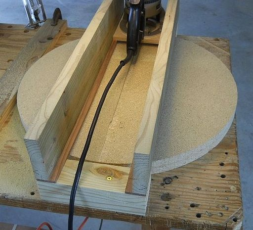
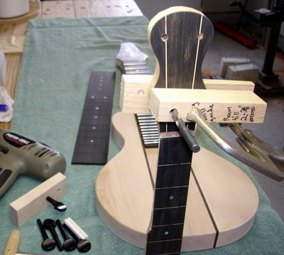
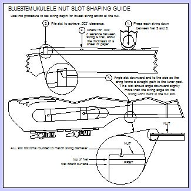

Select your area of interest:
Home* Lap Steel* 3 String Guitar* "Regular" Guitar* Violin* Bass*Banjo* Mandolin* Ukulele* Home Recording* Links
Bluestem Ukulele Related Information
I resisted the urge to build a Uke for quite some time, but finally threw in the towel. On this page you'll find information related most specifically to Uke construction, but also applicable in many cases to other instruments. This isn't yet another "How To Build a Ukulele" feature, (there are plenty of those already on the web) but instead presents a few of my own personal “guerrilla lutherie” tactics that might be found useful to home and small shop builders.Side Form
Shown here is the side form; it's ultra-simple and the halves can be joined or released with a few pocket screws across the top and bottom joints.
Top and Back Edge Jointing Jig
Shown below is a quick and dirty guide made up to edge joint Uke tops and backs. The height of the bearing guided router bit is set so the bearing will follow the edge of the machined blue level shown in the photo. I bought the level many years ago expressly to edge joint guitar top and back sets with self-adhesive sandpaper, but it works really well for use with this edge jointing jig. The jig's construction should be more or less obvious, it uses a pair of the blue knobs available from Rockler that slide on and off when angled and tighten securely when they are straightened on the 1/4"-20 all thread rod. The all thread is anchored into tee nuts recessed into the bottom section of jig. Do make sure your depth setting won't allow the cutting edge to contact the machined surface of the level!
You can also use the tried-and-true edge jointing method of 150 grit sandpaper attached to a machined edge level with double-stick tape is still a viable option for small instruments; it just requires a bit of muscular activity.

Top and Back Clamping Jig
This jig is made from a cheap $5 set of quick release bar clamps expressly for clamping up top and back plates. Construction is simple, but works quite well for its intended purpose. I first removed the clamping pads from the screw portion of the clamps. The ball end of the clamping screw is held captive in a shallow drilled hole drilled in the front bar with a small screw. The small screw prevents the clamp from falling out of the bar at the front of the jig.
Shown below is an updated version of the top and back clamping jig. This one uses a Rockler clamping jig kit (priced around $30) that came with a single 48" rail and all the hardware shown in the photo. The rail was cut into 6 equal sections and screwed into dadoed slots. This one can use 2 or 3 clamping points by tapping wood wedges between the knob shafts and the work to exert clamping force. It easily accommodates about any length of top or back that would be commonly used and needless to say, I like it.

Thickness Planing
I use a Wagner Safe-T-Planer for thickness planing tops, backs, sides, necks, headstock overlays, and fret boards, as well as creating the back angle for headstocks on all types of musical instruments. It easily planes down to the common 3/32" thickness that I often use as shown in the photo if care is used when holding down the material correctly. I've been using the Wagner for virtually all of my planing operations (even large furniture projects) for the past 25 years and am still amazed by its capabilities. I even use it with auxiliary fences to edge joint larger wood sections such as used for electric guitar bodies. I also inherited my dad's two brand new ones, so I'm a second generation aficionado.
Radius Dish Construction
Shown below is an easy way to form the radius dish form used for sanding side profiles and glue up of tops and backs into pre-determined curved profiles. They are also commonly used to support tops and backs while adding curved bracing. The router is mounted to a square base and rides on the curved lower rails as shown in the photo. The dish that is being made in the photo above is 22" in diameter and formed with a 20 foot radius. The router is fitted with a 1/2" carbide straight bit and the form is turned after each pass until the entire surface has been formed into the desired concave shape.I quickly decided after watching someone wrestling with a router mounted on the end of a 25 foot board that it would be a far easier to print simple patterns drawn in CAD to the desired radius and shape the rails to the printed pattern. This worked out really well and the dish form couldn't have turned out any better. I sanded the surface to remove any remaining fine lines left by the router bit and sealed the completed form with two coats of lacquer.

Here are the pdf files as shown below for printing out dish radius patterns with several different radii and dish sizes represented. Print all three sheets and follow the directions printed on them. In practice you trim the pattern to the desired radius and match up the radius ends to your desired width. It couldn't be simpler! Click HERE for the left panel in PDF format as shown above, HERE for the center, and HERE for the right.

Body End Wedge
How about a simple less-boring alternative to the standard end wedge? In this example a scrap of ebony was cut into a tapered wave shape drawn in CAD, bordered with maple and ebony strips on both sides, and inlayed over the body center joint.TIP: It is much easier to do this type of inlay if you cut the join lines of the sides to roughly follow the desired shape. If you work with a straight join you have to work around where the straight joint intersects areas that would be visible if the joint was initially cut straight.

Easy Kerfed Lining
A simple guide and depth stop is used to make kerfed lining easily. A mark is placed to the side of the blade to visually align the previously cut slot to make uniformly incremented slots.
Adding a K&K Big Island Transducer
This shot demonstrates that it is indeed possible to easily add a transducer to a completed instrument using the fingertip to position the transducer on the bridge plate. This one is being added before the back is glued as it is obviously much easier to add a transducer before closing the instrument up.NOTE: K&K recommends the transducer be mounted on the soundboard in the open area to the FRONT of the bridge plate and not directly on the plate as shown. I'm experimenting with placement and the photo demonstrates how easy it is to position the transducer with a fingertip through the soundhole of a completed instrument, regardless of the desired location.
Almost ready to close up the body...
A little brace rounding and this one will be ready to have the back glued on. Notice the "backwards" signature and date that will be visible as normal text when an inspection mirror is used to look inside the body. I used a normal pencil and transferred the image by placing the front side against the top and rubbing the back side with a stylus. Enough of the pencil is transferred to go over it with a pen or marker to create the reverse writing.
Spool Clamp
Here is a unique spool clamp. It is made from a 1/4"x20 by 7/8" long coupling nut and is cut away as shown. Use a fine tooth hacksaw to form the initial shape and sand the rough edges with a 3/4" diameter 80 grit drum sander in a Dremel. Clamp the barrel in a vise and use a 1/4" drill bit held at the correct angle to ensure that a 1/4"x20 threaded rod can pass through the center easily. Chase the threads with a tap if there is any problem with being able to align the shaped coupling nut to the threaded rod, it should work effortlessly. Drill a hole in the wood portion of the spool and anchor the outer portion of each barrel end with JB Weld. In use the nut portion slips easily along the threaded rod and locks in place as it is straightened before final tightening. This really works well for light clamping operations such as gluing the top or back to side joints.
Here's a quick video to show how it is made and how it works:
Routing Binding Ledges
The binding ledges are being routed for simple one piece ebony body binding. I prefer simple binding for most instruments, and 3/16" tall by 1/16" ebony adds a nice contrast as well as a protective edging for the inevitable bumps and bangs the instrument will receive over its lifetime. The top and back have a slight arch, but the flat router base is sufficient for this use. I use a few light passes and climb cut the entire body to eliminate any chance for tear out. The piloted carbide bit from Stewart-McDonald ensures that a uniform .060" ledge depth will be cut; the bindings are scraped down to match the sides after they are glued in place.Notice the momentary action foot control for the router which leaves both hands free at all times to hold the router and body. I use this foot control A LOT for tasks like this, with my 5" random orbit sander almost always used in conjunction with the momentary foot switch for fine control.

Stewart MacDonald Binding Router Base (kinda...)
Stuart-MacDonald used to sell this $15 replacement "tool mounting bar" for its popular router base and I had an extra Dremel, so I purchased one and made a dedicated binding ledge router by mounting it to a scrap of plastic salvaged from an old cutting board. The base is sanded to have a very slight taper to the outside with the high point running along the mounting bolt centerline. In use this accommodates the top arch nicely; hold it at the bolt locations and keep the high centerline roughly parallel to the top ledge. It works great and has a nice balance point, and frees up my "good" Stu-Mac base for other uses. The photo here shows a wood topped banjo binding channel, but great results can be expected for Uke or any other instrument using this set-up.
Binding Thicknessing
It's a simple matter to create custom binding from fret board cut offs or other scrap wood with the vertical oscillating spindle sander. It is VITALLY IMPORTANT that you feed AGAINST drum rotation and keep hands well away from the drum to eliminate any possibility of a finger being pulled in between the drum and the fence.
Planing The Headstock Surface
I use the Wagner Safe-T-Planer for virtually all of my planing operations; here the headstock surface is planed to the area where it intersects with the nut.
Uke Neck Blanks
Here are two laminated mahogany necks cut from an 18"x3"x3" blank. They have a 1/4" thick by 8" long 2024-T4 aircraft aluminum neck reinforcement bar which tapers from 1/4" to 3/8" installed in them, as well as a 1-1/4" long 1/4"x20 barrel nut embedded at the heel for connection to the body. A 1/4"x20 bolt can be seen at one end which was used to hold the barrel nut in place as the glue dried.Fret Board Slotting
I cut fret slots with a small "tile" saw that has been retrofitted with a jeweler's slotting blade that cuts a precise .023" slot width for standard frets. If you make a lot of instruments that require frets this saw works beautifully. You can cut hundreds of slots before the small inexpensive blade (less than $10) begins to dull. I have had many requests for the details about parts that I used to make this saw, so here's a quick rundown of what I used:Circular screw slotting blade (Thurston Mfg. Co. #J-034) .023” by 2-3/4” OD 1” arbor 72 teeth McMaster-Carr #3062A31
The blade was matched to the 5/8” arbor of the small circular saw using two arbor reducing washers:
McMaster-Carr #68885A62 1” to 3/4” hole reduction bushing
McMaster-Carr #68885A63 3/4” to 5/8” hole reduction bushing

Radiusing Fretboard
The fretboard has been thicknessed, profiled, and slotted for frets. Here the top surface is radiused using a 12" radius block and sandpaper. Pencil lines are drawn across the width of the fretboard so sanding progress can be monitored. The board is rough profiled with 80 grit sandpaper and progressively finer grits are used until all of the pencil marks are removed uniformly. Here 220 grit paper is used and the last remnants of the pencil marks can still be seen.
Heel Cap Inlay
A simple pre-cut Abalone inlay from Andy DePaule at Luthiersupply.com is used for the heel cap of the neck. The inlay is first spot glued to the cap material and the shape is cut out with a extra-fine inlay saw. The cap material is inverted, the inlay cut out filled with one hour black epoxy, and the inlay re-inserted into the opening from the rear. The technique is ultra-easy, and you can see the great results in the finished instrument photos.
Preparing Headstock Overlay
Bookmatched sections of spalted maple are glued together and a mask cut to the shape of the headstock is placed over it so the most attractive section of the overlay can be determined for use. The outline is traced on the overlay and it is cut slightly oversized for gluing to the neck blank.
Converting Grover Ukulele Tuners For Slot Head Use
Most slot head tuning machines that are commonly available are a bit oversized for uke use and can be pricy. I use this simple method to easily convert standard Grover uke tuners so they can be used in slot head designs. This is an economic alternative to end up with a set of functional and attractive slot head tuners at a more reasonable $25 per set. The entire tuner is a bit smaller overall when compared to other slot head tuners made for guitar, so a 11/16" peg head thickness can be accommodated easily.The new string posts are formed from 1" sections of heavy wall brass tubing. I use K&S Engineering #9211 brass tubing with a 5/16" outside diameter by .029" inside diameter. The 1" wide wood block is clamped in a vise to rough cut the sections to length. Leave the cut sections in the block to true the faces of the tubing to 90 degrees on the small disc sander.

The tuner is prepared by punching a hole in a piece of painter's masking tape to slip over the existing post. Two wraps of an 1/8" strip of the tape centers the tubing on the Grover post and seals off the tube so the epoxy can't seep out of the brass tubing before it sets up. The string post is roughed up with sandpaper and a couple of small flats are made at the end to ensure the sleeve locks securely to the string post when epoxied in place. (You can throw away that Grover warranty card now...)
Make sure to orient the hole for the string so it is perfectly vertical and measure the distance so the string hole can be re-drilled later. Mix up the epoxy and smear on the string post. Slip the tubing over the post and fill the remaining portion of tubing with epoxy and set to the side while it sets up.

Insert the new tuner post into the drilled wood block and drill out the string hole with a 1/16" bit at the correct location, which should be exactly 5/8" from the base plate if you forgot to measure!

The result? A seriously beautiful and inexpensive Uke-sized slot head tuner. Here's a before and after photo:

Full Size Grover Sta-tites
If you don't mind the slightly larger size of these tuners or slightly thicker peg head required to use them, these tuners are very nice for slot head use. The tuner pictured here has an ebony button from Stu-Mac substituted for the stock cast metal button. The wood buttons reduce the weight of the tuners by about 30% and are available in several other choices such as Snakewood and Koa. The Sta-tites are available in a few levels of quality; be certain to purchase the cast base variety. They cost twice as much but its money wisely spent. These are seriously nice tuners!
Grover Tuner Button Removal
I've received many inquiries about the method I use to remove the cast metal buttons from the Grover Sta-tite tuners. Here is a photo that should be more or less self-explanatory. A set of vertical "jaws" are made that replace the jaw inserts of a small machinist’s vise. The worm shaft is placed between the jaw inserts and the vise jaws are opened, forcing the tuner button from the worm shaft. Easy pie!
Drilling Tuner Holes
The radiused fretboard has been joined to the neck, side dots added, and headstock overlay added. The headstock has been cut to shape and sanded, and the tuner holes are being drilled. This process is being shown because it details an easy way to drill tuner holes accurately without any tear out issues. I use the same procedure for tuner installation for all types of instruments; vertical tuners get a backer board clamped over where the drill bit will exit the back side of the headstock surface.A 21/64" hole is required for the particular tuner I'm using here, so a guide block is first drilled to serve as a perpendicular guide for the drilled hole. The tuner locations are marked with a small 1/16" dimple and the drill bit (with it's end shaped to a point as shown) is inserted into the hole and used to position the guide block as it is clamped in place. Pull the bit out and double check the guide block location by peering into the guide hole with a small flashlight. Mark the bit depth and drill the hole. Use care to keep the bit straight and to prevent the guide block from shifting location when the hole is started. Repeat the process for the remaining holes. I've drilled literally hundreds of holes using this procedure without a single error, so I can highly recommend it.

The method shown below can be used to drill vertical posts. I've drilled hundreds of tuner holes using this method with absolutely no chip out of front or rear surfaces. Make sure you use a unused portion of the backing board for each drilled hole.

Plunge Routing Tuner String Post Slots
Here is a ultra-simple plunge routing jig for routing the tuner string post slots in the headstock.Start with a 1/4” piece of birch plywood and calculate the placement of ledges to add to the plywood top what will produce the desired slot dimensions with the bit you choose to use. I wanted a 1/2” slot width so I used a 3/8” carbide twin flute bit to produce the slots. If you want to bypass all that ciphering you can draw the slot in the center of the plywood, position the cutting edge of the bit on the line and mark the location of the ledges directly at the edge of the router base. Glue on these guide ledges, clamp your jig over scrap wood and make a test cut through the plywood. The slots you’ll produce will be identical to this test cut. If you’re satisfied with the results flip the jig over and glue a 3/4” tall by 3/4” wide guide by 4” long guide to the bottom. Space this guide outside of the opening by the exact distance you wish your slot to outer edge distance to be; in my case I’m using 3/8”.
A final step is to place your headstock face down over the slot and cut a tapered wedge from a scrap of softwood that will serve as a spacer between the headstock edge and the vise jaw. The taper is cut so the outer edges are parallel so it can be easily clamped in the vise jaws.
To use the jig it’s easiest to stick the tapered wedge to the bottom of the jig with double-sided carpet tape, invert the jig and neck, and clamp in position. Plunge route the slot in 1/8” steps until the route is completed. When you are done with one side repeat the procedure for the other side. The process is quite easy and results in perfect slots. Do remember to drill the tuner string post holes first so there will be no tear out which would occur if you drill them after the slots are routed.
You’ll find this method to be quick and easy, and the jig can be made very quickly, barely requiring any measurement or layout once you understand how it works.

Ukulele Nut & Bridge String Spacing Guide
Click HERE for a Ukulele string spacing layout guide in PDF format as shown below. It is designed to be used to lay out the desired spacing for bridge and nut slots. I have used versions of this format to lay out nut and bridge spacing on a variety of instruments and it is my preferred method. I keep the various incarnations of these guides around the shop to use any time I need spacing layouts for 4, 5, 6, and 8 string instruments. I find them to be very useful and great time savers. Need different spacing? It's as easy as re-folding the paper! Save the pdf to your computer and you'll be able to print out a fresh one whenever needed. There are also a few peg head top profiles added just to use the space.
Ukulele Nut Slotting Guide
Click HERE for a Ukulele nut slotting guide in PDF format as pictured below. It demonstrates the proper way to form nut slots for lowest possible action at the nut, although some players might prefer a bit higher action if they have an aggressive playing style.
Contouring Bridge Bottom
The bridge had the long dimension cut to match the arch of the top, and the width is hollowed slightly to match the arch of the body along its length by use of the arched scraper. You can see the remnants of pencil lines (where the white arrows are pointing) drawn across the bridge width so the contouring progress can be monitored. When the bridge bottom matches the top arching in both directions the neck can be temporarily bolted to the body to assist with final positioning of the bridge.The bridge is precisely located by positioning the center of the saddle slot at scale length (17") plus the compensation factor, 5/64" for this particular instrument. The saddle slot is straight on this instrument due to its use of traditional re-entrant high fourth string tuning. The saddle slot would be slanted slightly for low fourth string tuning as detailed on the construction print.
When the bridge is positioned correctly two 1/16" holes are drilled through the saddle slot ends to assist in positioning the bridge properly when it is glued to the top surface. Insert the ends of two toothpicks in the drilled holes and trace around the bridge VERY LIGHTLY with a pencil. The bridge is removed and placed on a piece of thin packaging tape. A mask matching the bridge shape is made by cutting around the bridge with a sharp hobby knife. This mask is cut just a bit smaller and placed just inside the penciled bridge outline on the instrument top surface. This will mask the top while finish is applied, and is removed after finish application so there is bare wood to glue the bridge to. The pencil marks can be carefully erased after the bridge mask is in place.

Gluing Bridge To Top
Here is one final shot of the construction process I've included to show the one-off bridge clamps I made to glue the bridge in place. You can also see the end of one of the toothpicks sticking up from the saddle slot end that serves to hold the bridge while it is being glued. When the glue is dried it will be time to bolt the neck on and string it up.
Full Size Concert Body Profile
Click HERE for a Concert size ukulele body template in PDF format as pictured below. The PDF will print out a full size body profile. Make certain that the page scaling option in your PDF print menu is selected as "no fit" (or whatever your print options menu calls it...) so the page will print accurately.
Concert Ukulele Fret Layout Guide
Click HERE for a Concert size Fret layout guide. Make certain that the page scaling option in your PDF print menu is selected as "no fit" (or whatever your print options menu calls it...) so the page will print accurately.
Ashley's Stopper Knot
Click HERE for a PDF format diagram that explains how to tie the Ashley's Stopper Knot as pictured below. This stopper knot forms a large three-lobed knot that retains string ends reliably for instruments designed to have the knotted ends of the strings anchor against the inner face of the bridge plate within the instrument. The lobed configuration resists being pulled through the bridge string hole much better than smaller knot forms.
Bluestem Tenor Ukulele:


"My Gal In The Prairie Grass Skirt" video demonstration:
Bluestem Full Size Tenor Ukulele Construction Plan, current price including shipping is $16 within the U.S. and $20 outside of the U.S.

Bluestem Tenor Ukulele Plan Specifications:
- Full size 23" X 35" dimensioned in both standard U.S. fractions and metric conversions
- Sitka spruce and mahogany 17" scale tenor
- 19 frets (14 to body) with pearl position markers
- Slot head design with Grover Deluxe Sta-tite slot head guitar tuners
- alternate Grover Uke tuners can be used for slot head design with modifications as shown above
- Three piece laminated neck (optional tapered 2024-T4 aircraft aluminum bar reinforcement shown)
- Simple bolt on neck design utilizes knock down furniture fasteners
- standard body shape (alternate cutaway design shown)
- Alternate peghead top and fretboard end profiles shown
"Ukulele Underground"
I often like to apply my tactics of “guerrilla lutherie” in new applications, as this tenor ukulele page demonstrates. Hopefully you’ve found a few innovative ideas here that you can apply to your own projects. Please feel free to visit the Ukulele Underground Forum "Bluestem Uke Building tips page" topic HERE where I originally posted a link to this web page if you would like to comment.Ukulele Underground has the largest amount of information available anywhere relating to all aspects of the Ukulele culture, so be sure to check out the website thoroughly while you're there.
Additional information:
If you desire to contact me: rcordle (substitute the at symbol here) fastmail (substitute the dot here) fmPlease include "Bluestem Info Request" in the subject line.
Please visit my other website for assorted information on musical instrument construction. There are free plans, construction tips, and a plethora of aggravating pop up ads. You have Angelfire.com to thank for that...
Rudy's Sketchbook of Musical Instrument Plans, Ideas, and Inspiration